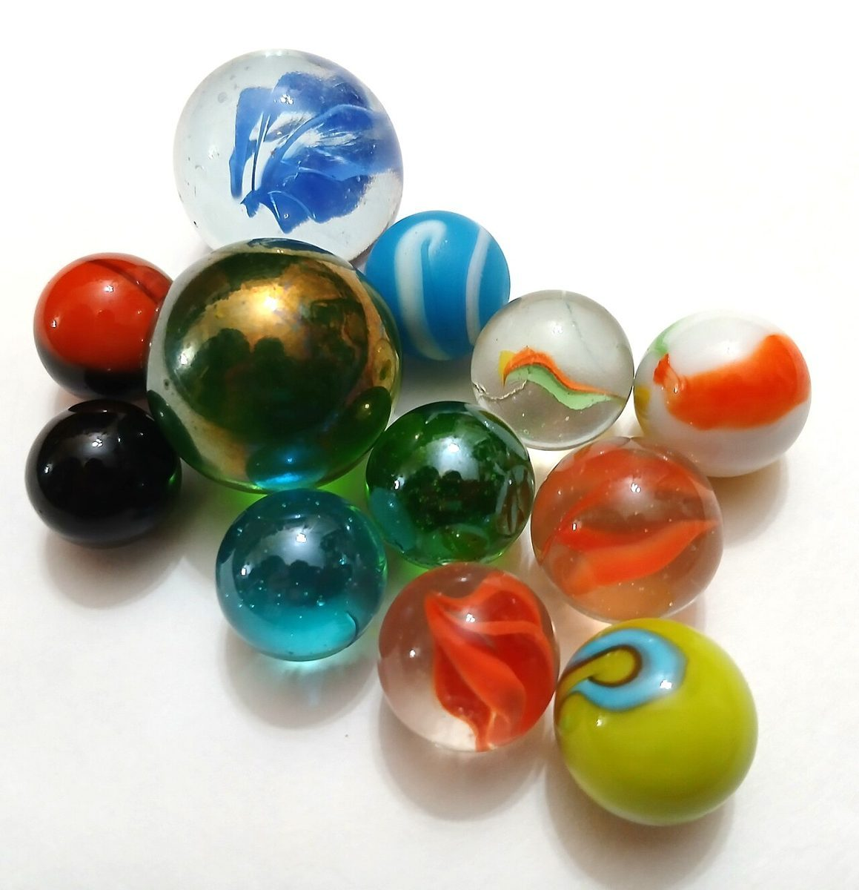

制作側の連想
缶バッジマシンの部位を、配置図にしてみる
丸い金属の台紙に絵柄をはさんで、押し込んで作る缶バッジ。そのマシンの部位を図にしたもので、制作側の連想です。お店の理念・由来とは無関係で、実際の製品の仕様を示すものでもありません。六つの部位に番号をふり、上の図と並べています。
凡例
六つの部位
- 1ハンドル(レバー)手で下ろす長い棒。てこの力で、上の型をぐっと押し下げる。
- 2上型(押し込み側)腕の下にぶら下がる、丸い型。材料を上から押さえて、形にするところ。
- 3回転台(ターンテーブル)二つの型をのせた円盤。回して、押す位置と取り出す位置を入れ替える。
- 4下型(受け側)回転台にはまった、丸いくぼみのある型。ここに材料を重ねて置く。
- 5支柱と腕後ろに立つ柱と、前へ張り出す腕。上型とハンドルをまとめて支える。
- 6ベース(台座)底に据えられた厚い板。机の上に置いて、全体をどっしり安定させる。
写真
写真(イメージ)




写真はイメージです。お店のものではありません。
ご案内
お店のこと(確認できたものだけ)
| 所在地 | 〒987-0903 宮城県登米市東和町錦織萱野５ |
|---|---|
| 電話 | 準備中 |
| 営業時間 | 準備中 |
| 定休日 | 準備中 |
| ご予約 | 準備中 |
| 駐車場 | 準備中 |
| SNS | Instagram @cafeoneworld |